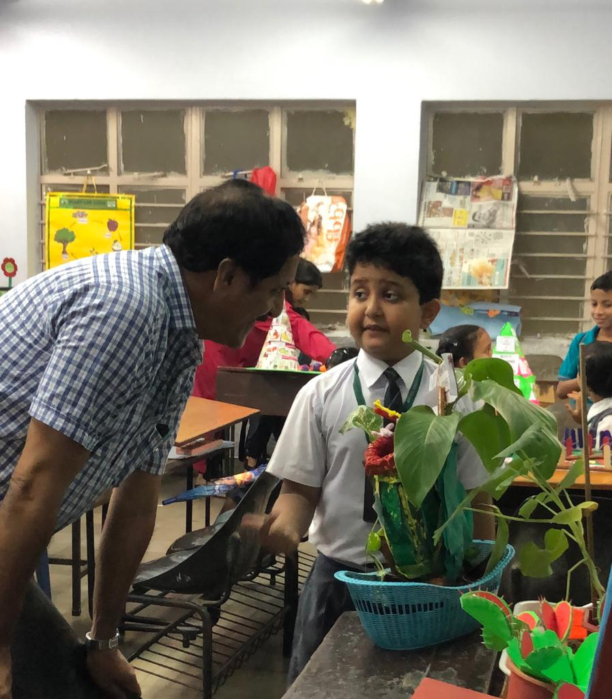

Campus Life

science exibition in school
The Science exhibition was about Plant Kingdom. The topic covered terrestrial, aquatic, insectivorus, non-chlorophyll, creepers, climbers, aerial root plants etc. I was showing Insectivorus plants with my group. I made a model of Nepenthes Khaisana, the Pitcher plant found in mineral deficient soil. It was appreciated a lot.

school chrech
The name of my School crech is Kilbil. Kilbil means the sounds of birds. It has 4 sections called Kislay, Kiran, Kinjal and Kishore.The strength of KIlbil is 300, we have 20 teachers and 50 aunties. We have an outdoor and an indoor play area and a lot of toys to play with. There is a library with a lot of story books. There are various activity classes also in Kilbil like Dance class, Music class, Speech and drama class, Krarate, Chess , art and craft classes, etc. Annual sports and function are also held. We also have Kilbil Mela where we sell aour art and craft things and donate the money to the cancer patients of Tata Memorial Cancer Hospital.

annual function of school
The day of Annual function of school is always memorable. The title of the function was Reflections. Various dances , drama, songs, etc. were the highlights along with the prize distribution ceremony. I was in the Dance-drama called Barso re megha, where I was playing the character of Farmer. It was great fun.
me with my friends
My classmates, my friends and my group-mates for science exhibition. Their names are Reyansh and Aman. A lot of study-time together, joint efforts for the models and memorising the text to be spoken, all thsi led to our fantastic performance on the final day of science exhbition. Our topic was Insectivorous plants. I was showing Pitcher plant, Reyansh was showing Venus fly-trap, and Aman showed the Sun-dew. It was a fabulous experience working for the project.